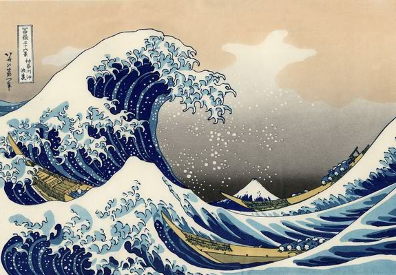
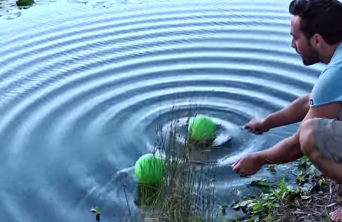

No interior do Sol, núcleos de hidrogênio se fundem, formando Hélio. Nesse processo, parte da massa do Hidrogênio é transformada em energia e irradiada para o espaço, chegando à Terra em forma de ondas eletromagnéticas.
Quando você fala, gera uma perturbação que se propaga pelo espaço, fazendo os tímpanos dos seus ouvintes vibrarem e, após um complicado processo, gerarem sinais elétricos que chegam ao cérebro pelo nervo auditivo.
Movimentos bruscos das placas tectônicas nas profundezas da Terra produzem grandes quantidades de energia que se propagam pela crosta terrestre em forma de terremotos (e também tsunamis).
Da visão à audição, dos terremotos à transmissão de sinais de telefonia celular, as ondas estão presentes.
Considere uma mola comprida sobre uma mesa, a qual uma pessoa segura uma de suas extremidades, estando a outra extremidade presa a um suporte fixo. Essa pessoa irá, primeiramente, oscilar sua mão perpendicularmente ao eixo da mola. Em um segundo momento, ela comprime uma parte da mola e solta. Em ambos os casos, "algo" se propaga através da mola.
Vejamos agora uma animação que considera pontos em uma corda longa, onde uma de suas extremidades sofre uma única oscilação, em MHS.
Uma observação rápida do fenômeno provavelmente concluirá que há "algo" se deslocando para a direita. Contudo, uma observação cuidadosa (clique no botão "Visualizar") nos permite perceber que os pontos da corda apenas oscilam verticalmente. Não há matéria se deslocando para a direita!
O que se propaga pela corda é uma "perturbação" gerada pela pessoa que moveu a extremidade esquerda da corda. Ou seja, certa quantidade de energia percorre a corda, sem que haja transferência de matéria, pois, como já dissemos, os pontos da corda apenas oscilam verticalmente (em MHS) com a passagem dessa "perturbação".
Chamamos esse processo de propagação de energia sem transporte de matéria de onda.
Vejamos uma imagem de ondas bidimensionais produzidas sobre a superfície de um lago:
Agora vejamos uma ilustração de uma onda tridimensional:
Em uma onda transversal, as partículas do meio oscilam em uma direção perpendicular à direção na qual a onda se propaga. Em uma onda longitudinal as partículas do meio oscilam na mesma direção da propagação da onda (ondas sonoras, por exemplo), e em uma onda mista, as partículas do meio oscilam das duas formas, ou seja, tanto na mesma direção da propagação da onda, como na direção perpendicular a esta. É o caso das ondas no mar.
Na próxima aula veremos quais elementos usamos para caracterizar uma onda e estudaremos aspectos relativos à velocidade de propagação destas.